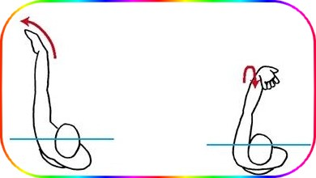

تمرین های بازیابی کرال پشت
Backstroke Recovery Drills
تنظیم زمان برعکس کرال پشت باعث می شود که بهبودی دست به بخشی فعال از استروک تبدیل شود. در حالی که به عضلات بازو استراحت می دهید ، بازوی بهبود یافته باید به عنوان توازن برای بازوی نوازش کننده باشد. تحقق این امر مستلزم آن است که بازوی در حال بهبودی در رابطه با بقیه اعضای بدن به درستی تراز شود. تمرینات بازیابی کرال پشت بر توسعه مسیری آرام ، همسو و متعادل بر روی آب تمرکز دارند.
دست های ساعت گونه
Clock Arms
-
اهداف این تمرین
- استفاده از موقعیت ورودی تراز شده
- یادگیری برای جلوگیری از ورود بیش از حد
- احساس دامنه حرکتی طبیعی شانه

-
چطور تمرین را انجام دهیم
- جلوی آینه تمام قد بایستید. چهره ساعت بزرگی را که متمرکز بر آینه روبرو است تصور کنید. بازوی راست خود را بالای سر خود بالا بیاورید ، انگار که برای ورود به پشت آماده شوید، کف دست اول. دست خود را در ساعت 12:00 قرار دهید. اکنون ، سعی کنید بازوی خود را به سمت پایین پایین بیاورید تا جایی که در آب قرار دارید ، به نقطه ای در حدود دوازده اینچ پایین تر از سطح آب برسید. توجه داشته باشید که از وضعیت 12:00 ، شانه شما اجازه این چرخش را نمی دهد ، مگر اینکه دو مفصل باشید.
- باز هم ، بازوی راست خود را بر روی سر خود بلند کرده و انگار می خواهید برای ورود به پشت وارد آب شوید. این بار ، بازوی خود را در ساعت 1:00 قرار دهید ، و سعی کنید بازوی خود را همانطور که در آب قرار دارید پایین بیاورید و به نقطه ای در حدود دوازده اینچ پایین تر از سطح آب برسید. توجه داشته باشید که شانه شما این چرخش را فراهم می کند و با آزادی بیشتری در اطراف مفصل حرکت می کند. ممکن است برخی از شناگران برای ورود راحت تر از 1:30 یا 2:00 استفاده کنند.
- هنگامی که یک نقطه ورود پیدا کردید که اجازه چرخش مفصل شانه را می دهد ، سعی کنید این نقطه ورود را با بازوی دیگر کپی کنید. اکنون با بازوی متناوب ، بازوهای ساعت خود را در آینه کنترل کنید تا از ورود بیش از حد ساعت 12:00 جلوگیری کنید. 30 ثانیه ادامه دهید.
- اکنون ، بازوهای متناوب را با چشمان بسته امتحان کنید. هر شش یا هفت حرکت ، در موقعیت ورودی خود را یخ بزنید ، چشمان خود را باز کنید و بررسی کنید که آیا در ساعت 1:00 یا 11:00 به درستی قرار گرفته اید تا بازوی شما آزادانه به سمت پایین پایین بیاید و شما مستقیماً به جلو تراز شوید. پس از بررسی ، و در صورت لزوم اصلاح ، اقدام به سکته مغزی با چشم بسته از سر بگیرید. دوباره بررسی کنید. این کار را تا جایی ادامه دهید که بتوانید بازیابی را با یک موقعیت ورود مطابق تنظیم کنید.
- حالا آن را در آب امتحان کنید. اگر در استخر سرپوشیده شنا می کنید ، از تیرها ، لوله ها یا خطوط سقف استفاده کنید تا در ساعت 1:00 و 11:00 بازوهای خود را مرتب کنید. اگر در استخر روباز شنا می کنید ، ساعت را در اطراف خود تصور کنید و دستان خود را خارج از ساعت 12:00 مرتب کنید. برای شروع استروک ، هر بازو را به پایین آب بیاندازید و ببینید آیا بازوی شما به راحتی در اطراف مفصل شانه می چرخد. تمرین کنید که بازوی خود را دقیقاً در مسیری که می روید تراز کنید. این کار را ادامه دهید تا به یک ورودی هم تراز دست پیدا کنید که هم به بازوی شما اجازه می دهد دامنه حرکت بیشتری داشته باشید و هم مستقیماً شما را به سمت جلو حرکت می دهد.
بازیابی دو مرحله ای
Two-step Recovery
-
اهداف این تمرین
- ایجاد مسیر بهبودی
- احساس تراز شدن صحیح در بهبودی
- اجتناب از ورود بیش از حد

-
چطور تمرین را انجام دهیم
- دیوار را فشار دهید و برای انجام کرال پشت آماده کنید ، هر دو بازو روی سر شما کشیده شده ، ستون فقرات مستقیم ، خط آب خوب و ضربه پا موثر است.
- یک ضربه بزنید ، بازوی دیگر را دراز کنید. هنگامی که بازوی شما مرحله زیر آب استروک را از لگن خود به پایان رساند ، آن را مستقیم از آب بلغزانید و از کنار بدن عبور کنید. مسیر ترمیم خود را با ردیابی یک نیم دایره در هوا ، از جایی که بازوی شما از آب خارج شده تا جایی که وارد آن می شود ، از شانه خود امتداد داده و در جهتی که می روید ، تنظیم کنید. با بازوی دیگر ، با تمرکز بر روی مسیر قوس دار به جلو و بازوی بهبود یافته ، این کار را تکرار کنید.
- اکنون ، هنگامی که بازوی شما پس از استروک بعدی بهبودی را شروع می کند ، شروع به ردیابی قوس روی آب کنید ، اما بازو را در بالاترین نقطه قوس متوقف کنید و تا پنج بشمارید. به تراز بودن بازوی بالاتر خود توجه کنید. این باید مستقیماً بالای شانه شما باشد ، و به آسمان اشاره دارد ، نه بالای صورت. بهبود نامناسب منجر به ورود بیش از حد می شود که استروک را از موقعیت ضعف آغاز می کند.
- پس از شمارش پنج ، بازوی خود را به داخل آب پایین بیاورید ، همان مسیر بهبودی را به صورت معکوس طی کنید ، و دست خود را از لگن خود عبور دهید. تا پنج بشمارید و دوباره بهبودی را شروع کنید ، این بار کل مسیر بهبودی را ردیابی کرده و وارد آب از شانه خود شوید. هنگام عبور بازو ، تراز خود را در نقطه مرتفع بررسی کنید. همانطور که بازوی شما این دومین بهبود کامل را آغاز می کند ، بازوی کشیده استروک زیر آب خود را شروع می کند.
- هنگامی که بازوی دوم استروک زیر آب را به پایان رساند ، دوباره یک نیمه بهبودی و سپس بهبود کامل انجام دهید. بازوها را با بازیابی دو مرحله ای تا انتهای استخر ادامه دهید. به مدت طولانی تمرین کنید تا مسیر بهبود با شانه شما در بالای قوس هماهنگ شود و در بدو ورود به مرکز فراتر نروید.
تمرین آرنج قفل شده
Locked Elbow Drill
-
اهداف این تمرین
- یادگیری بهبودی کامل دست
- گسترش دامنه استروک با قفل کردن آرنج در حال بهبودی
- احساس تعادل مخالف

-
چطور تمرین را انجام دهیم
- تکه ای از گچ را در دست بگیرید ، با پشت به دیوار بایستید. در اطراف شکل شانه ها و سر خود ردیابی کنید.
- هنوز در داخل خط گچ خود روی دیوار ایستاده اید ، بازو را با گچ دراز کنید ، گویی که از زمان بازیابی پشت خود آماده ورود به آب هستید. در آن موقعیت روی دیوار علامت بگذارید. بازوی خود را به پهلو برگردانید.
- بازوی گچی خود را دوباره دراز کنید ، اما وقتی به موقعیت ورود نزدیک می شوید ، آرنج خود را به حالت قفل شده فشار دهید ، مثل اینکه اگر می خواهید به چیزی در قفسه برسید که کمی بلند باشد. با استفاده از فشار بیشتر ، علامت دیگری را بر روی دیوار ایجاد کنید تا از علامت اول متمایز شود.
- از دیوار فاصله بگیرید و دو علامت را با هم مقایسه کنید. توجه داشته باشید که با قفل کردن آرنج ، علامت دوم در بالای شانه قرار می گیرد ، جایی که به عنوان اولین علامت با سر شما بیشتر تراز می شود. علاوه بر این ، بسیاری از شناگران متوجه می شوند که به راحتی قفل کردن آرنج خود ، علامت دوم چندین سانتی متر روی دیوار بالاتر خواهد بود ، که نشان دهنده یک ضربه طولانی تر است. آن را با بازوی دیگر امتحان کنید.
- حالا وارد آب شوید و برای پشت ضربه ، بازوها را روی سر خود قرار دهید ، ستون فقرات را مستقیم ، خط آب خوب و لگد تولیدی را از دیوار فشار دهید. یک ضربه زیر آب را پشت سر ران قرار دهید. بهبود خود را با تمرکز بر آرنج شروع کنید. در هر نقطه از مسیر قوس گذاری روی آب به دنبال خم شدن در بازوی بهبودی خود باشید. کرال پشت را شنا تا انتهای استخر شنا کنید و هر دوره نقاهت را تماشا کنید و هرگونه خم شدن در آرنج خود را بررسی کنید.
- باز هم به طور منظم کرال پشت را شنا کنید. در حالی که هر استروک از لگن شما عبور می کند ، قبل از شروع بهبودی آرنج را عمداً به موقعیت قفل شده فشار دهید. آرنج قفل شده خود را در تمام دوران نقاهت حفظ کنید. توجه داشته باشید که استروک شما طولانی تر خواهد شد. همچنین توجه داشته باشید که بازوی بهبود یافته آرنج قفل شده شما احساس اتصال بیشتری به بازوی زیر آب دارد ، زیرا در حالی که آنها به طور مشترک حرکت می کنند تعادل مخالف ایجاد می کند. همچنین توجه داشته باشید که هنگام انتقال بازوی بهبودی خود به بازوی نوازنده ، می توانید آب را بهتر احساس کنید.
گوش های سگ
Dog-ears
-
اهداف این تمرین
- احساس صدا کردن دست بیرون
- نگه داشتن یک بازوی محکم و یک دست آرام
- جلوگیری از مچ دست فرو ریخته هنگام ورود 
-
چطور تمرین را انجام دهیم
- برای شروع کرال پشت از دیوار خارج شوید. به یک ستون فقرات مستقیم ، خط آب خوب ، تعادل مخالف و آرنج قفل شده بازگردید. به طور مولد لگد بزنید. استروک و بهبودی. پس از بهبودی ، دست شما باید ابتدا به داخل گلدان آب وارد شود ، آب را برش دهد ، نه اینکه با دست صاف در آن سوراخ ایجاد کند. این امر مستلزم قرار گرفتن دست با کف دست به سمت بیرون است. برای چندین بار ضربه زدن به کف دست را امتحان کنید.
- اکنون ، با حفظ وضعیت ورود به کف دست در پایان بهبود ، دوباره کرال پشت را شنا کنید. وقتی بازو از بالای قوس بازیابی عبور کرد ، در موقعیت یخ بزنید. مشاهده کنید که انگشتان شما به کدام سمت نشان می دهند. اگر آنها به سمت داخل صورت شما هستند و پشت دست خود را می بینید ، مچ دست شما فرو ریخته است. مچ دست فرو رفته ، کف دست شما را به سمت بالا قرار می دهد ، گویی که پیشخدمتی هستید که سینی را روی شانه خود نگه داشته اید. این ضعیف ترین موقعیت ورود ممکن است و در چینش شما اختلال ایجاد می کند. توجه داشته باشید که با مچ دست فرو رفته ، عضلات بازوها به جای استراحت در هنگام بهبودی ، در حال کار هستند. همچنین توجه داشته باشید که با مچ دست فرو ریختن ، بهبودی قفل شدن آرنج بسیار دشوارتر است. شنا را ادامه دهید و از مچ دست فرو ریخته جلوگیری کنید.
- اکنون ، با آرنج قفل شده ، بازویی که از کف دست خارج می شود ، به عمد اجازه دهید تا آن دست به سمت خارج از مچ دست بریزد و انگشتان را مانند حالت شل کنید. این موقعیت گوش سگ است. توجه داشته باشید که بازوی شما به سادگی با تغییر وضعیت مچ دست شما آرام می شود. این نکته را نیز توجه کنید که وقتی دستتان به آب می افتد ، وقتی دستتان به سمت آب پایین می آید ، کاملاً در موقعیت قرار گرفته تا یک مشت آب بگیرید.
- با ریکاوری گوش سگ ، شنای کرال پشت را ادامه دهید. میزان استروک خود را افزایش دهید. با هر ورودی یک مشت آب بگیرید ، آن را بگیرید و بدن خود را از کنار دست خود عبور دهید.